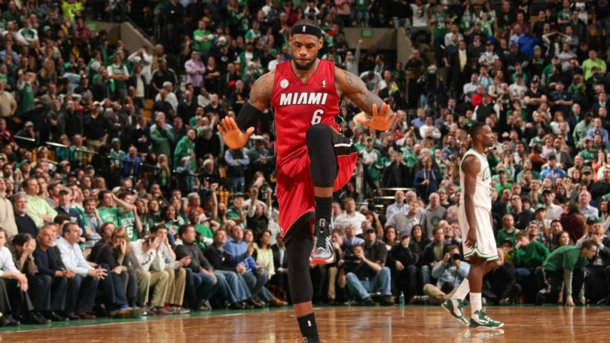
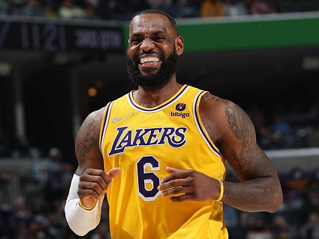
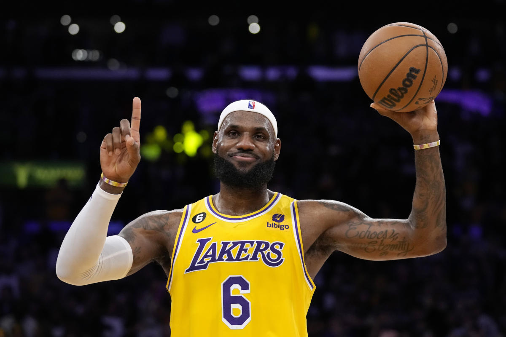

LeBron James的生涯
LeBron James是一位職業籃球運動員，他的職業生涯涵蓋了多個球隊和十分成功的戰績。以下是近十年來他的戰績變化及所屬球隊的故事：
2013-2014賽季至2017-2018賽季：邁阿密熱火隊
LeBron James在2010年加入邁阿密熱火隊，與Dwyane Wade和Chris Bosh組成了"Big Three"。在此期間，他帶領熱火隊在2012和2013年連續兩次贏得NBA總冠軍。他的籃球技巧和領導力使他成為球隊的核心。
2018-2019賽季至今：洛杉磯湖人隊
LeBron James在2018年轉會至洛杉磯湖人隊，成為球隊的重要一員。他與年輕球員和其他明星球員共同合作，努力帶領湖人隊重返勝利。在2020年，他帶領湖人隊贏得了他的第四個NBA總冠軍。
個人成就
除了團隊戰績，LeBron James在個人層面上也取得了卓越的成就。他多次當選NBA全明星，並獲得了許多個人獎項，包括四次NBA最有價值球員（MVP）獎、兩次NBA總冠軍賽最有價值球員（Finals MVP）獎等。
